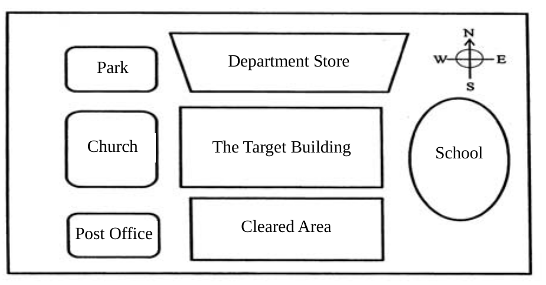

先讀文章、作答下方的題目，再展開最後的「看答案、依據句與逐段中譯」。也可以到互動練習線上作答，交卷後自動批改。
第 1 段Demolition is the tearing-down of buildings and other structures. You can level a five-story building easily with excavators and wrecking balls, but when you need to bring down a 20-story skyscraper, explosive demolition is the preferred method for safely demolishing the huge structure.
第 2 段In order to demolish a building safely, blasters must map out a careful plan ahead of time. The first step is to examine architectural blueprints of the building to determine how the building is put together. Next, the blaster crew tours the building, jotting down notes about the support structure on each floor. Once they have gathered all the data they need, the blasters devise a plan of attack. They decide what explosives to use, where to position them in the building, and how to time their explosions.
第 3 段Generally speaking, blasters will explode the major support columns on the lower floors first and then on a few upper stories. In a 20-story building, the blasters might blow the columns on the first and second floor, as well as the 12th and 15th floors. In most cases, blowing the support structures on the lower floors is sufficient for collapsing the building, but loading explosives on upper floors helps break the building material into smaller pieces as it falls. This makes for easier cleanup following the blast. The main challenge in bringing a building down is controlling the direction in which it falls. To topple the building towards the north, the blasters set off explosives on the north side of the building first. By controlling the way it collapses, a blasting crew will be able to tumble the building over on one side, into a parking lot or other open area. This sort of blast is the easiest to execute, and it is generally the safest way to go.
48.What do the blasters need to do in preparing for the demolition of a building, according to the passage?
49.In most cases, where does the explosion start in the building during its destruction?
50.According to the following diagram, which part of the target building should the demolition team explode first to safely bring it down?

51.What is the passage mainly about?
| 題號 | 官方答案 | 答對率 | 鑑別度 |
|---|---|---|---|
| 48 | (A) | 58% | 62 |
| 49 | (C) | 64% | 56 |
| 50 | (C) | 47% | 44 |
| 51 | (B) | 56% | 46 |
答對率與鑑別度出處：大考中心 101 學年度指定科目考試統計圖表：英文科答對率及鑑別指數表
第 2 段The first step is to examine architectural blueprints of the building to determine how the building is put together.
第 3 段blasters will explode the major support columns on the lower floors first
第 3 段To topple the building towards the north, the blasters set off explosives on the north side of the building first.
第 3 段into a parking lot or other open area.
依據句：全文要讀完整篇才能判斷，不在某一句裡。
第 1 段拆除是把建築物和其他結構拆掉。用挖土機和破壞球，可以輕鬆夷平一棟五層樓的建築；但要拆掉一棟 20 層樓的摩天大樓，安全拆除這種龐大建築的首選方法是爆破拆除。
第 2 段為了安全地拆除一棟建築物，爆破人員必須事先擬定周詳的計畫。第一步是研究建築物的藍圖，了解建築物是怎麼構成的。接著，爆破小組會在建築物裡實地走一遍，記下每一層樓的支撐結構。收集到需要的所有資料以後，爆破人員就擬定作戰計畫。他們決定要用哪些炸藥、炸藥放在建築物的什麼位置，以及引爆的時間怎麼安排。
第 3 段一般來說，爆破人員會先炸低樓層的主要支柱，再炸幾層高樓層。以一棟 20 層樓的建築為例，爆破人員可能會炸一樓和二樓的支柱，以及 12 樓和 15 樓的支柱。大多數情況下，炸掉低樓層的支撐結構就足以讓建築物倒塌，但在高樓層裝炸藥，有助於讓建材在倒下時碎成比較小的塊，爆破以後比較容易清理。拆除建築物最大的挑戰，是控制倒下的方向。要讓建築物往北倒，爆破人員就先引爆建築物北側的炸藥。爆破小組控制建築物倒塌的方式，就能讓建築物倒向一側，倒進停車場或其他空曠的地方。這種爆破最容易執行，通常也是最安全的做法。
每個選項為什麼對、為什麼錯的完整解析還在撰寫中；這一篇目前先提供依據句、原文和正確選項的對應，以及逐段中譯。